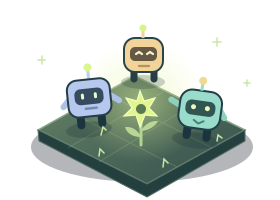

A school for small robots
Little Signals.
They know how to wander. You teach them how to care.
Bring sun pods home before sunset. Every little lesson matters.

Loading local game modules… JavaScript must be enabled. No download or account is needed.
Meet your class. Select Pip, Ada, or Bop.
Give two lessons. Return with a pod. Recharge safely.
Launch & observe. Adjust routes. Rescue mistakes.
A little brighter.
Paused for lessons. One beat = 2 seconds; sunset after 150 beats. Pausing does not spend time.
Start with Pip: teach “When carrying → return home,” then “Low power → recharge.”
Every choice leaves a trace
Rewind the little things.
Download your shift or watch a real automated development run. Imports are checked against the same rules before playback.
Read-only playback. Use Launch / step above, or scrub here. One recorded action may contain up to 25 beats. Restart to leave replay.
No uploads, tracking, storage, sound, or external assets. Downloads are explicit; resets discard unsaved play. Max imported file: 2 MB.
Built, played, improved — three times
Small changes. Measured.
Pods delivered: 1 → 6. Stranded robots: 1 → 0.
Wall bumps: 148 → 0. Delivery: 0 → 6 / 12.
Blocked moves: 428 → 10. 12 pods / 96 beats.
These are actual deterministic engine runs, not human playtests. Solvability and better robot behavior are not evidence of fun.
Inspect machine-readable evidence ↗Field guide · controls, scoring, and the four preserved builds
How the colony works
Each robot can carry one pod. Moving one tile or gathering costs one energy. The nursery restores six energy per charging beat. Teaching costs no beats; it changes explicit rules, not a machine-learning model.
In the latest build, trained robots plan real paths, reserve different patches, and politely exchange places when they meet head-on. They still need your return and recharge lessons.
Win by delivering the garden’s goal before beat 150. Lose at sunset, when all robots are stranded with no kits, or at the 512-action practice cap. A reset starts clean.
Keyboard & scoring
1 2 3 select a robot. D toggles return; C toggles recharge. ← → change route. N advances one beat. Space launches / pauses. Escape pauses. R restarts.
Keys do not override focused form controls. Tab reaches every button; map symbols are optional shortcuts. Hidden tabs pause automatically.
Score = 100 × delivered pods + 3 × unused beats on a win + remaining energy − 2 × blocked moves − 75 × rescues, floored at zero.
Try a historical build
Reserve different patches, rotate move priority, and exchange places politely at a narrow crossing.
Seeds vary pod supplies, not the rules. Earlier builds intentionally retain their recorded failures. All four run the same versioned engine.